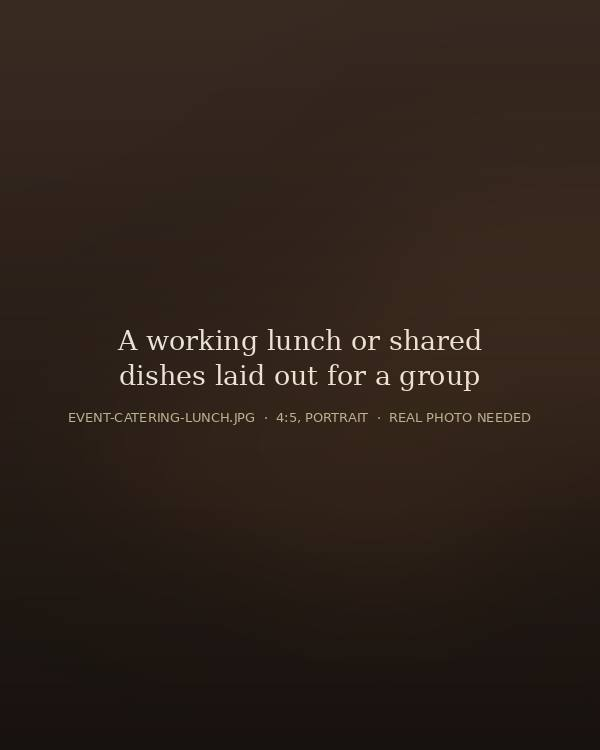

Give your guests something to look forward to
A good meal can be a welcome pause in a busy day and a reason to keep the conversation going.
The Babbling Gourmet caters intimate corporate events, seminars, team dinners and client gatherings, with custom menus by Chef Andi Marcus.


Bring your team to the table
Whether you’re thanking your team, welcoming clients or gathering colleagues away from the office, I’ll help you create a meal that suits the occasion.
We can discuss a seated dinner, a shared meal or a format that allows guests to eat and mingle. Each menu is developed with your group’s tastes and dietary requirements in mind.
Keep the day moving with a well-planned meal
For seminars and working events, timing matters as much as the menu. We’ll talk through your agenda and plan the food around it, whether you need lunch between sessions or dinner to bring the day to a close.
Share your venue details, guest count and schedule, and we’ll work through the arrangements together.
We also welcome enquiries for weddings and larger corporate events.
Andi will discuss your plans with you and explore menu and service options suited to the size and setting of your event.
Let’s start planning
Tell us when and where you’re gathering, how many guests you expect and what you have in mind for the food.